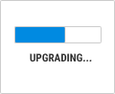

Xshell 5
Secure Terminal Emulator
Xshell is a powerful terminal emulator that supports SSH, SFTP, TELNET, RLOGIN and SERIAL. It delivers industry leading performance and feature sets that are not available in its free alternatives. Features that enterprise users will find useful include a tabbed environment, dynamic port forwarding, custom key mapping, user defined buttons, VB scripting, and UNICODE terminal for displaying 2 byte characters and international language support.
Xshell offers many user friendly features that are not available in other terminal emulators. These features include Zmodem file uploads by drag and drop, Zmodem file downloads by selecting the file name, simple mode, full screen mode, transparency options, and a custom layout mode. Save time and effort when performing terminal tasks using Xshell.
Xshell is free for home and school use. Please read our free for home and school use license agreement for terms and conditions.
- Compatible with Windows 10
- Manual
- EULA & Privacy Policy : Registered / Evaluation / Free
Key Features
-
New Flexible and Powerful Tabbed Environment
Xshell 5 introduces the most flexible and powerful tabbed environment seen in a terminal emulator. Xshell tabs can be detached from the original window to create a new window or can be re-attached to a entirely different Xshell window. Also, a single Xshell window can be split vertically or horizontally to display multiple terminal sessions in a single window. Xshell’s new tabbed environment is extremely versatile yet surprisingly intuitive.
-
New Are You Prepared for IPv6? Xshell is Ready.
Recently, more and more companies and countries are adopting IPv6. Join the migration to the latest network platform with Version 5’s IPv6 support. Whether you’re using IPv4 and IPv6 simultaneously or are completely on the IPv6 network, our software is ready to meet your needs.
-
New Client Authentication with MIT Kerberos
Kerberos is widely used in today’s enterprise environment where various operating systems are used and a centralized user authentication is required. The centralized authentication method of Kerberos provides more secure and convenient user access to the servers. To accommodate our enterprise users’ needs, Xshell 5 includes support for MIT Kerberos authentication.
-

New Keep Xshell Up-to-Date
In today’s fast paced and ever-changing IT industry, running the most stable and secure software is a must. We regularly release updates for our software which include bug fixes, security patches, and occasionally, new features. Our new Live Update feature in Xshell 5 checks for new updates and notifies users when one is available. Staying up to date is now faster and easier than ever.
-
New Redirect Key Input to Multiple Terminals
System administrators frequently have to work with multiple remote hosts and tediously perform repetitive tasks over and over. With our new synchronized input redirection feature, what you type can be simultaneously sent across multiple selected terminals. Used in conjunction with split pane windows, you can see the results immediately on these selected terminals. The new input redirection not only sends all key inputs but can also send key combinations and function keys, not just the text strings. This allows for full control over your multiple terminal sessions without the hassle.
-
New Make Your Sessions More Secure With a Master Password
Xshell encrypts all passwords and passphrases before saving them to a file. The master password adds an extra layer of security to the password encryption algorithm, thus making it harder for hackers to steal your password.
-
New Prevent Unauthorized Access with Automatic Terminal Lock
When you leave your desk but keep a terminal open, anyone passing by can be granted full access to the remote server, and all data in the server can be jeopardized. Xshell’s new automatic terminal lock feature prevents unwanted users from accessing the terminal session. Xshell checks, at a preconfigured time limit, if the user is still interacting with Windows and then locks the terminal screen when no interaction is detected.
-
New Edit Terminal Contents With a User Defined Text Editor
With Xshell 5, you can quickly open the terminal contents with a user defined 3rd party text editor. Users can configure Xshell to use an external text editor such as Sublime or Visual Studio to edit the terminal contents allowing smoother integration with the your workflow.
-
Improved Powerful Automation With More Scripting Language Support
Script is now more powerful with more scripting languages supported. Xshell 5 supports VB script, Javascript and Python. You can now automate tedious and repetitive tasks with script.
-
User Defined Key Map Support
User requests for a key mapping feature has been implemented in Xshell 5. Terminal keys and file menus can be mapped to a user’s preferred keys, and you can even map a key to start an application or to start scripting.
-
Multiple Language Support for Global Users
Xshell now supports UTF8 encoding. With UTF8 support, Xshell can now display multiple languages in a single terminal screen. This feature is particularly useful if your database has entries in different languages. You can easily switch to UTF8 encoding by selecting Unicode (UTF8) in the Encoding list on the Standard toolbar.
-
Open Multiple Sessions in a Single Window With the Session Tab
The Session Tab lets you open multiple sessions in a single Xshell window. A session is added to the Session Tab when it starts and users can freely switch the displayed name, close the session, and rearrange the order. For system and network administrators who need to access multiple servers occasionally, the Session Tab feature can reduce desktop clutter and provide a more flexible work environment.
-
Control Xshell Using the Local Shell Interface
Local shell interface is a unique Xshell feature that lets you control Xshell without having to take your hands off the keyboard. Some of the actions you can perform in local shell include establishing SSH/TELNET/RLOGIN/SFTP connections, creating new sessions, opening existing sessions, etc. Local shell also provides network utilities such as ping, iptrace, and netstat for which you would previously need to use an entirely separate program.
-
Quick SSH/Telnet Connections Using the Address Bar
The Xshell Address Bar is the quickest and the easiest way to access your hosts. Type in the domain name or the IP address of the host in the Address Bar, and click Go. It is as simple as surfing the web.
-
Send Frequently Used Commands and Strings Using Quick Command
Quick Command lets you assign frequently used commands or strings into buttons. Oftentimes, users have to retype the same string repeatedly. Quick Command saves time by letting you send these repetitive strings with just click of a button. Save even more time by grouping these Quick buttons.
-
Secure Your Communication with SSH
The SSH protocol is the one of the most secure remote communication protocols available on the market today, and it is included in Xshell. With SSH, all of your network communications between your PC and remote hosts are encrypted with highly reliable encryption algorithms. However, there is more to SSH than security. The X11Forwarding feature of SSH lets you run any remote X application through a secure SSH tunnel regardless of the complexity of your network environment.
-
Launch X Applications Through SSH Tunnel (X11 Forwarding)
Xshell can interoperate with Xmanager to launch X11 applications through an SSH tunnel. This is a secure and reliable way to use applications in the remote servers, and is preferred over TELNET and other protocols. If your PC is located in a NAT network, SSH can launch X applications without having to reconfigure your network.
-
Send a String to Multiple Servers at Once With the Compose Bar
The Compose Bar lets you write a query before it is sent to the server. Users can decide to send it to all connected servers at once or just one time. The Compose Bar can be especially useful to server administrators who need to send the same commands to multiple servers to check the status of the servers. The Compose Bar also has a history feature built in, so you do not need to type the same command twice.
-
Real time Channel Monitoring (SSH) Using the Tunneling Bar
The Tunneling Bar provides real time monitoring of all incoming and outgoing SSH traffic. If you have an X application that freezes frequently, you can specifically target the channel the application uses and terminate it without affecting other running applications. This ensures tighter integration and reliability of your servers and Windows machines.
-
Send Responses Automatically with Wait & Response
The Wait & Response feature sends predefined set responses when a user specified message is received from servers. This feature is especially useful when the destination server can only be reached by going through an intermediate server. Define a set of responses, and Xshell can carry you through the intermediate server as well as the destination server. Without altering the server side, the Wait & Response feature can be set to run scripts or system utilities upon login.